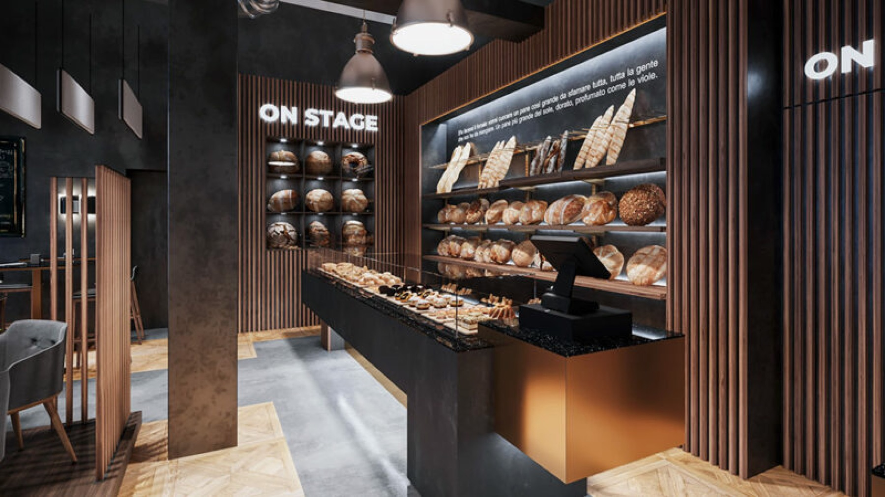
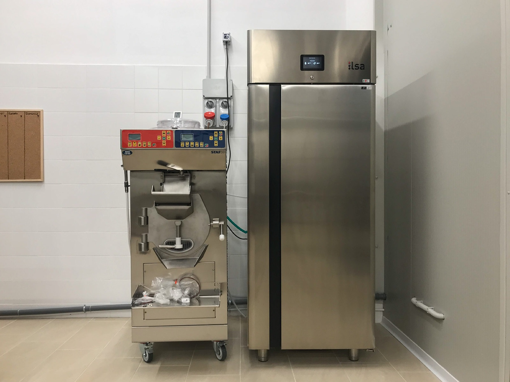
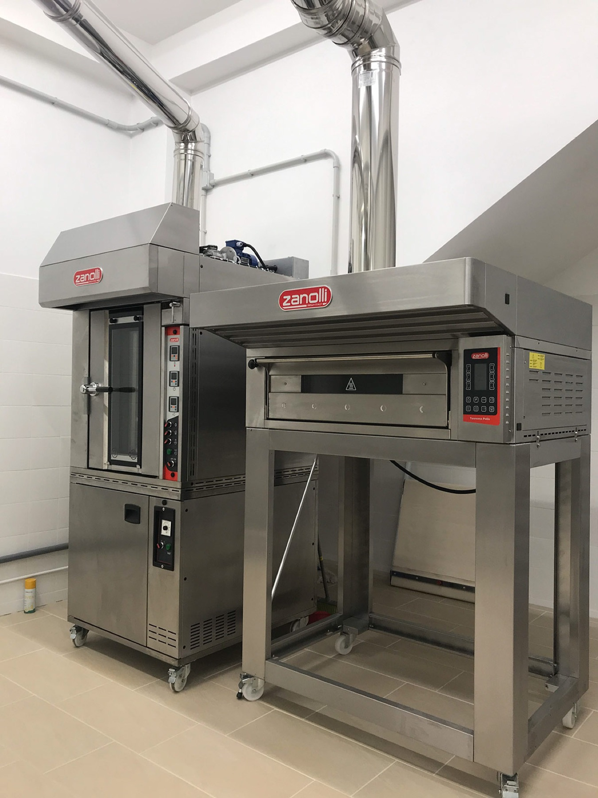

03 — Arredamento bar e ristoranti
Dove il freddo
e il carattere convivono.
Banchi refrigerati, retrobanco, esposizione a vista: qui il capitolato parte da superfici certificate, pulibilità e continuità della catena del freddo. Il progetto comincia da questi vincoli e trova lo stile dentro, non sopra.
Ambiti


Realizzazioni
Progetti
Arredamento bar e ristoranti.
Filtra per ambito per vedere solo i progetti della categoria che ti interessa.

Nessuna realizzazione pubblicata per questo ambito.